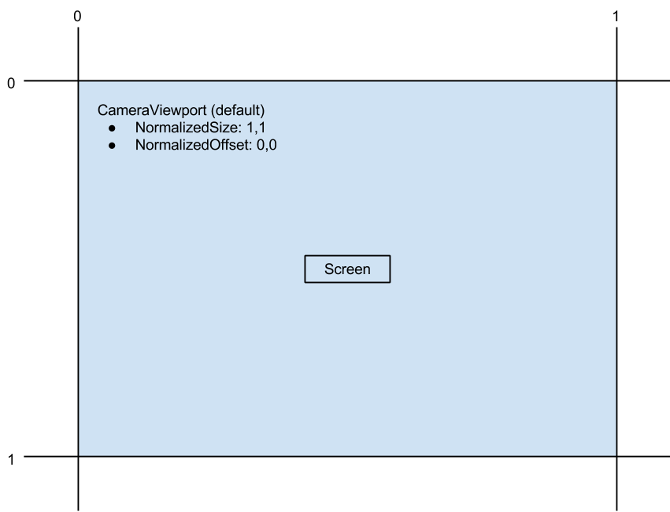
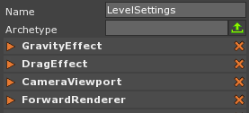
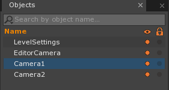
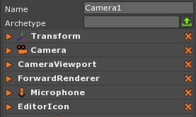
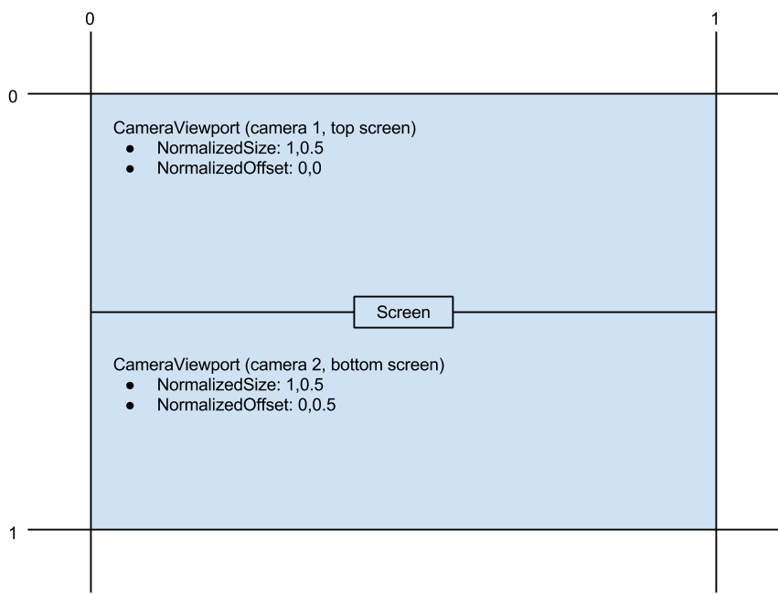
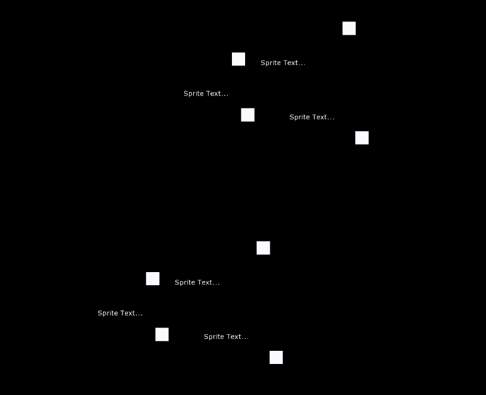
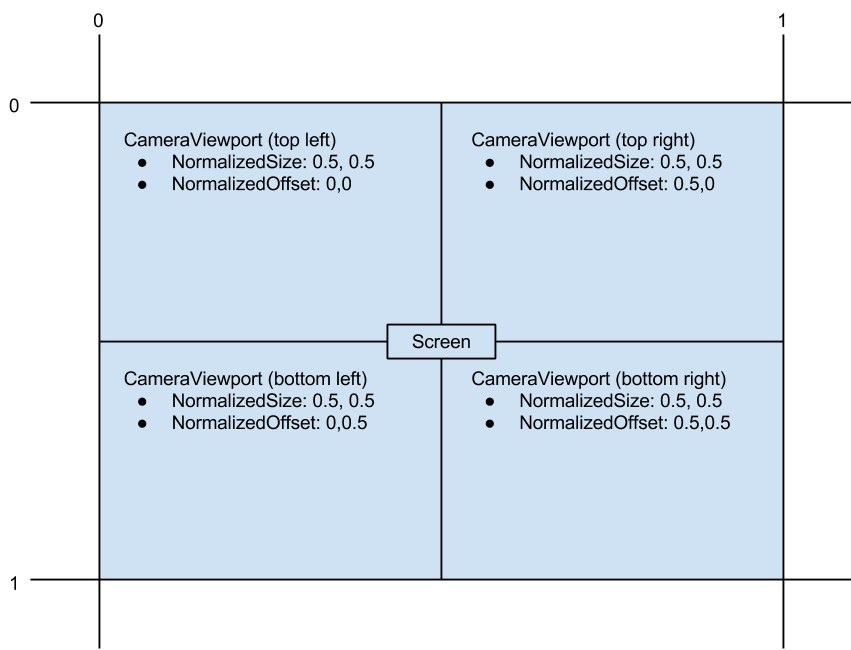

Cameras, Viewports and Renderers
This sections covers engine render pipeline components.
Overview
For rendering in the Zero Engine there are three key components:
- The Camera component is the “eye” which can be moved or rotated to change the direction we are facing. It is also how the space is projected geometrically. This includes the projection mode (Orthographic vs Perspective), field of view, near and far, eye point and sprite sorting mode.
- The CameraViewport component holds relevant data to where we are rendering to the screen. The CameraViewport is the top level object that refers to a Camera object and a Renderer object. We can also switch between cameras by just assigning a different camera object to the CameraViewport component. The CameraViewport has functions for converting from screen space to world space and getting the mouse ray. The CameraViewport also sends out a ViewportMouseEvent for events like MouseDown, MouseUp etc.
- The Renderer component is used as to render the CameraViewport to the space. there are two types of Renderers in Zero by default but you may add to them or implement your own. The ForwardRenderer is a simple and fast renderer with limited lighting which is usually used in 2D games. The DeferredRenderer Full deferred renderer for lots of lights and is usually used in 3D games.
By default the Camera component is on the object called “Camera” with the CameraViewport and ForwardRenderer being assigned to the LevelSettings components. This is useful for game scripting as you can get the camera through LevelSettings.CameraViewport.Camera to change it. However, as you may of guessed split-screen requires that we have a separate set of components for each Camera.
Default settings visual:

Split-Screen
Now that we have a clear picture of how Zero’s rendering works, lets create a simple split-screen demo. To start create a new project and select the LevelSettings object.

Remove the ForwardRenderer and CameravViewport Components from LevelSettings and add them onto the Camera. Now make a copy of the Camera object and name one of them “Camera1” and the other “Camera2” (Cameras in Zero require unique names).
It should look something like this:


Next we need to set each CameraViewport to render a specific part of the screen and a size appropriate for its position. To do this we will set Camera1’s CameraViewport to a NormalizedSize of (1.0,0.5). Next set Camera2’s CameraViewport to a NormalizedSize of (1.0,0.5). Now we need to offset the second camera so it doesn’t render in the same spot as the first. To do this set Camera2’s CameraViewport to a NormalizedOffset of (0.0,0.5). Remember to set the CameraViewport’s Camera and Renderer to the Camera Object.
split-screen settings visual:

To test lets create a few Sprites and SpriteTexts. Press the Space bar and type “CreateSprite” to create a Sprite. To create a SpriteText press Space bar and type “CreateSpriteText”. Then move them around a little so we can distinguish them from each other. Also, lets move the cameras a little bit so that they are not in the same place but can still see the Sprites and SpriteTexts. Run the game and you should see something like what is below.

You can use the same setup for four player split-screen as well we just need to add two additional Cameras (with CameraViewports and Forward Renderers) and adjust the offset and size of each camera.
Four Player Split-screen settings visual:

Other uses which you may find helpful when using Camera Viewports is in HUDs, Minimaps, Character portraits, or other windows into different spaces which need to be rendered to the screen.